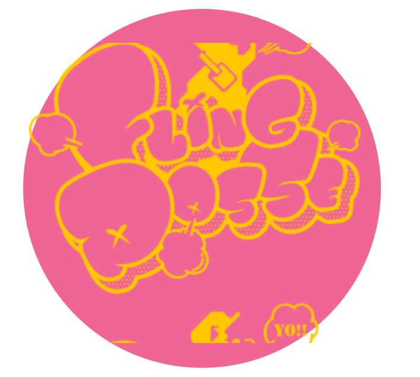

Shibuya Crossing!
easy R
Name: Ramuda Amemura
Occupation: Fashion Designer
Birthday: February 14
Age: 24
Zodiac: Aquarius
Height: 5’1”
Occupation: Fashion Designer
Birthday: February 14
Age: 24
Zodiac: Aquarius
Height: 5’1”
Ramuda is the
producer of the fashion brand 'Empty
Candy'. He is quick-witted and calculating,
though he often makes absent-minded
remarks with a frequent lack of tact in his
words. He's very popular with women
due to his cuteness. His stage
name is 'easyR.'
producer of the fashion brand 'Empty
Candy'. He is quick-witted and calculating,
though he often makes absent-minded
remarks with a frequent lack of tact in his
words. He's very popular with women
due to his cuteness. His stage
name is 'easyR.'
Meiji Jingu Shrine
Phantom
Name: Gentaro Yumeno
Occupation: Novelist
Birthday: April 1
Age: 24
Zodiac: Aries
Height: 5’10”
Occupation: Novelist
Birthday: April 1
Age: 24
Zodiac: Aries
Height: 5’10”
A writer who
dresses like an intellectual from a
bygone era. He enjoys making up stories
about the lives of the strangers he passes on
the street. He is an extremely persuasive liar and
oftentimes those lies would go unnoticed were it
not for his habit of teasing the gullible by
telling them, “That was just a lie”. His
stage name is 'Phantom.'
dresses like an intellectual from a
bygone era. He enjoys making up stories
about the lives of the strangers he passes on
the street. He is an extremely persuasive liar and
oftentimes those lies would go unnoticed were it
not for his habit of teasing the gullible by
telling them, “That was just a lie”. His
stage name is 'Phantom.'
Hachiko Memorial Statue
Dead or Alive
Name: Dice Arisugawa
Occupation: Gambler
Birthday: July 7
Age: 20
Zodiac: Cancer
Height: 5’10”
Occupation: Gambler
Birthday: July 7
Age: 20
Zodiac: Cancer
Height: 5’10”
A gambler so addicted to
the game he’ll lay not only whatever
cash he can get his hands on, but even his
life, down on the table for the right bet. He
makes all of his decisions with the dice he carries
around. As often as he finds himself flat broke,
he's quick to latch onto anyone who will
feed him. His stage name is
'Dead or Alive.'
the game he’ll lay not only whatever
cash he can get his hands on, but even his
life, down on the table for the right bet. He
makes all of his decisions with the dice he carries
around. As often as he finds himself flat broke,
he's quick to latch onto anyone who will
feed him. His stage name is
'Dead or Alive.'
listen on spotify!
